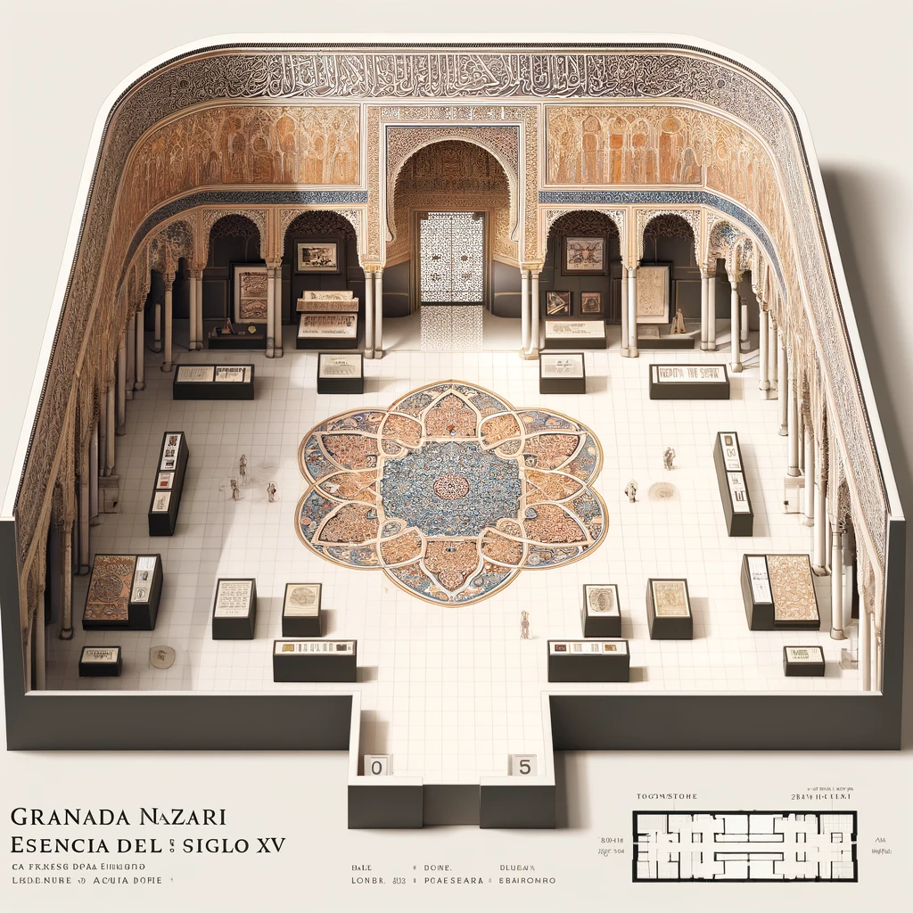
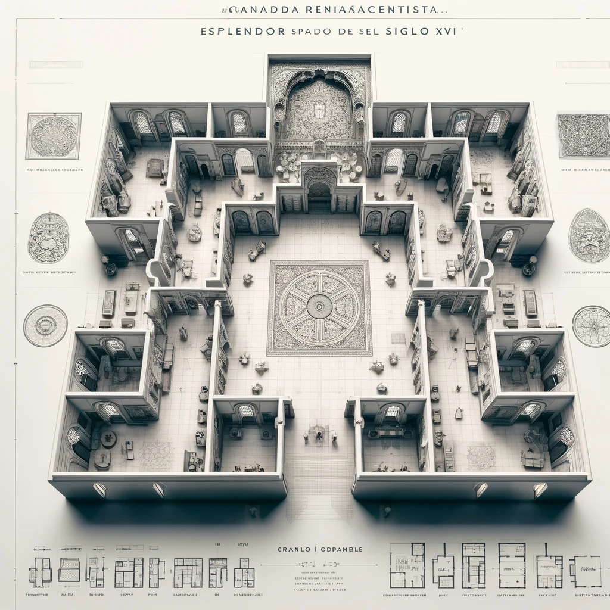
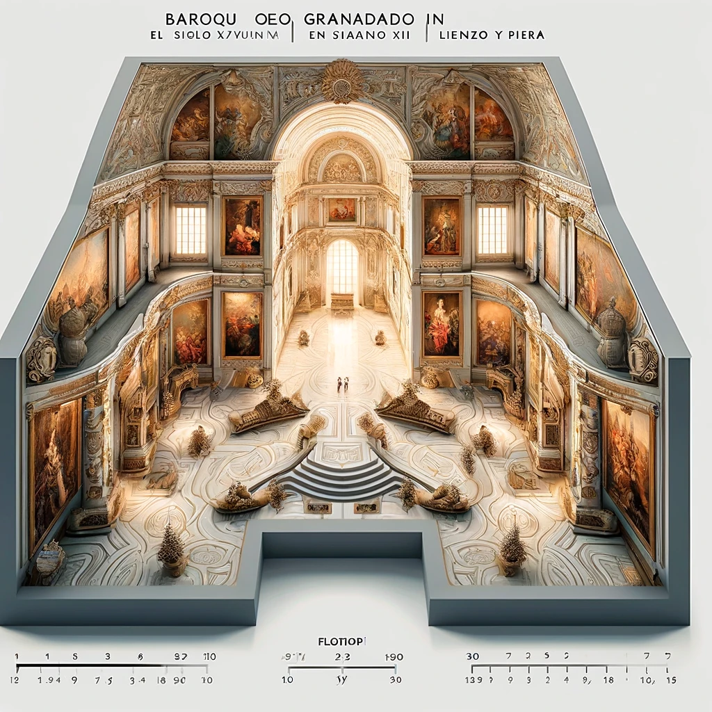
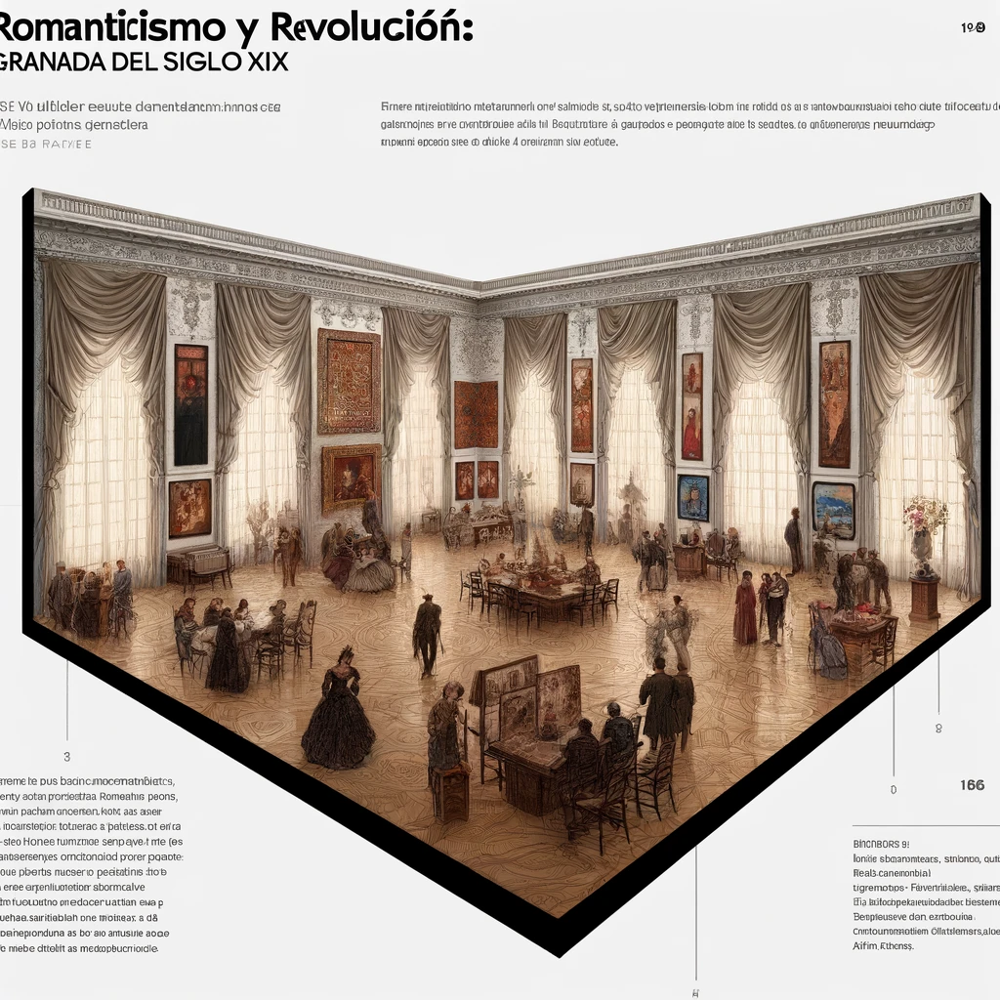

Antes de la transición a la era moderna, esta sala se sumerge en el último siglo del Reino Nazarí de Granada. Exhibiendo una selección exquisita de arte islámico, incluye azulejos intrincadamente decorados, textiles y manuscritos que ilustran la sofisticación y el refinamiento cultural de Granada en el siglo XV. Las obras destacan la habilidad y el arte de los artesanos granadinos de la época, con especial atención a la Alhambra, cumbre del arte islámico en España, mostrando su influencia duradera en el arte y la arquitectura.
Esta sala del museo se dedica a explorar Granada durante el Renacimiento, un periodo de transición cultural y artística tras la Reconquista. Aquí se exhiben obras que reflejan la fusión de influencias islámicas y cristianas, con pinturas de artistas como Pedro Machuca y esculturas que adornaban lugares emblemáticos de la ciudad. Los frescos y retablos muestran un vívido retrato de la vida y la religiosidad de la época.
El siglo XVII en Granada es retratado a través de la grandiosidad del Barroco. En esta sala, los visitantes pueden admirar las dramáticas expresiones del arte barroco en obras de Alonso Cano, quien jugó un papel crucial en la decoración de la Catedral de Granada. Las pinturas y esculturas expuestas capturan la intensidad emocional y la profundidad espiritual características del periodo, siendo un testimonio de la riqueza cultural de la ciudad.
Esta sala ofrece una visión de Granada durante el Siglo de las Luces, destacando cómo la ciudad se adaptó a los ideales de la Ilustración. Se destacan mapas antiguos, grabados y obras de arte que ilustran los cambios urbanísticos y sociales. La colección incluye también instrumentos científicos de la época, reflejando el creciente interés por la ciencia y la educación en Granada.

El siglo XIX está representado en esta sala a través de la lente del Romanticismo y los cambios políticos de la época. Obras que capturan la belleza dramática de la Alhambra y las pinturas costumbristas de Manuel Gómez-Moreno González ofrecen una visión nostálgica pero crítica de la Granada de ese tiempo. Los visitantes pueden sumergirse en una época donde la lucha por la identidad y la modernización moldearon la ciudad.
La evolución de Granada en el siglo XX se explora en esta sala a través del Modernismo y otras corrientes artísticas contemporáneas. Aquí se muestran desde los vibrantes cuadros de José Guerrero hasta las influencias del Cubismo y el Surre